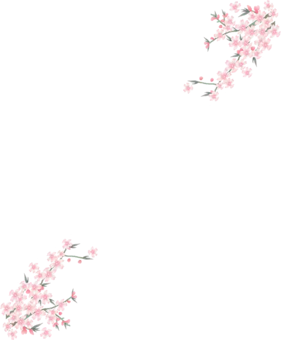

谷雨，谷得雨而生也
·谷雨节气·
谷雨是二十四节气的第六个节气，也是春季最后一个节气，每年4月19日～21日时太阳到达黄经30°时为谷雨，源自古人“雨生百谷”之说。同时也是播种移苗、埯瓜点豆的最佳时节。“清明断雪，谷雨断霜”，谷雨是春季最后一个节气，谷雨节气的到来意味着寒潮天气基本结束，气温回升加快，大大有利于谷类农作物的生长。
谷雨是春季的最后一个节气，这时田中的秧苗初插、作物新种，最需要雨水的滋润，所以说“春雨贵如油”。
·谷雨节气·
这时，中国南方大部分地区东部这时雨水较丰，常年4月下旬雨量约30至50毫米，每年第一场大雨一般出现在这段时间，对水稻栽插和玉米、棉花苗期生长有利。
·谷雨节气·
走谷雨
古时有“走谷雨”的风俗，谷雨这天青年妇女走村串亲，或者到野外走走，寓意与自然相融合，强身健体。
喝谷雨茶
传说谷雨这天的茶喝了会清火，辟邪，明目等，所以南方有谷雨摘茶习俗，谷雨这天不管是什么天气，人们都会去茶山摘一些新茶回来喝，以祈求健康。
赏花
谷雨前后是牡丹花开的重要时段，牡丹花也被称为“谷雨花”。“谷雨三朝看牡丹”，赏牡丹成为人们闲暇重要的娱乐活动。
·关注我们·
信息工程系 数媒1701
二十四节气之谷雨
请扫描二维码